Rozumie się przez to metodę odzysku, w ramach której odpady są przetwarzane na produkty, materiały lub substancje, a następnie ponownie wykorzystywane w pierwotnym lub innym celu. Recykling nie obejmuje odzysku energii oraz ponownego przetwarzania na materiały, które mają być końcowo wykorzystane jako paliwo.
Zalety recyklingu
Bezpłatne pozbycie się niepotrzebnych odpadów z gospodarstw domowych. Obniżenie zużycia surowców naturalnych. Redukcja ilości odpadów na wysypiskach. Przetworzenie surowców i materiałów na nowe lub ponowne ich wykorzystanie.
Bezpłatne pozbycie się niepotrzebnych odpadów z gospodarstw domowych. Obniżenie zużycia surowców naturalnych. Redukcja ilości odpadów na wysypiskach. Przetworzenie surowców i materiałów na nowe lub ponowne ich wykorzystanie.
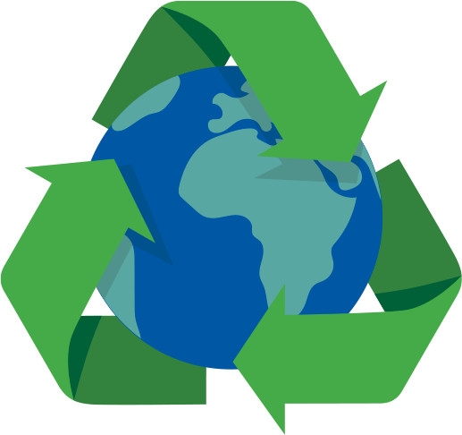


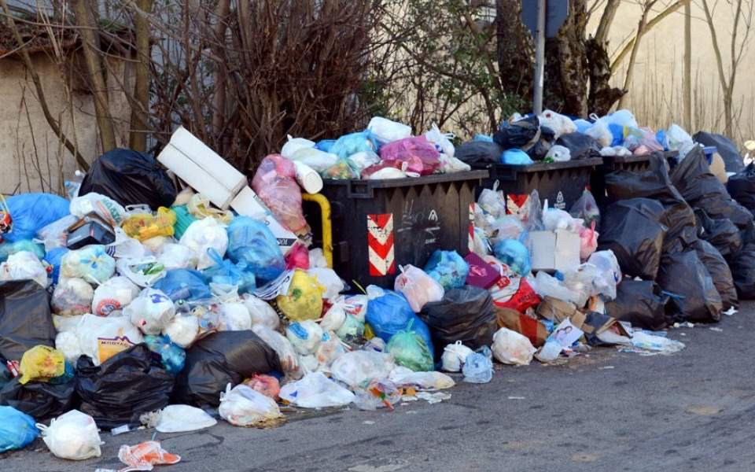
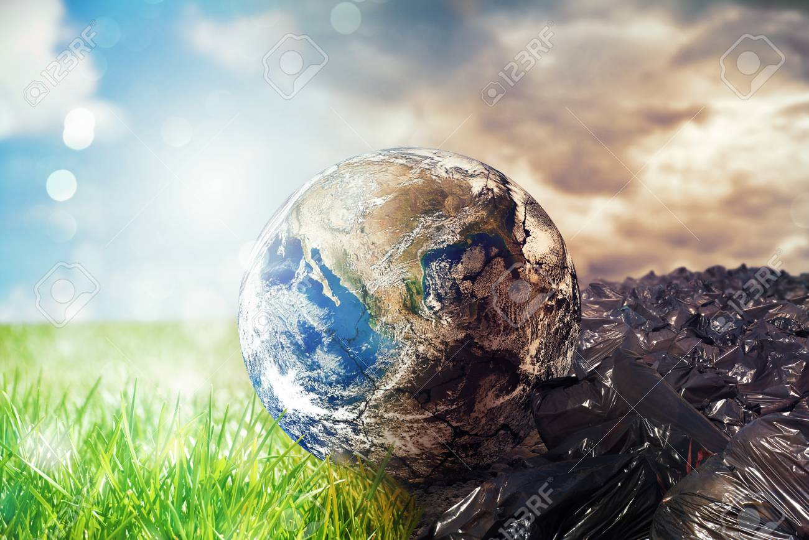
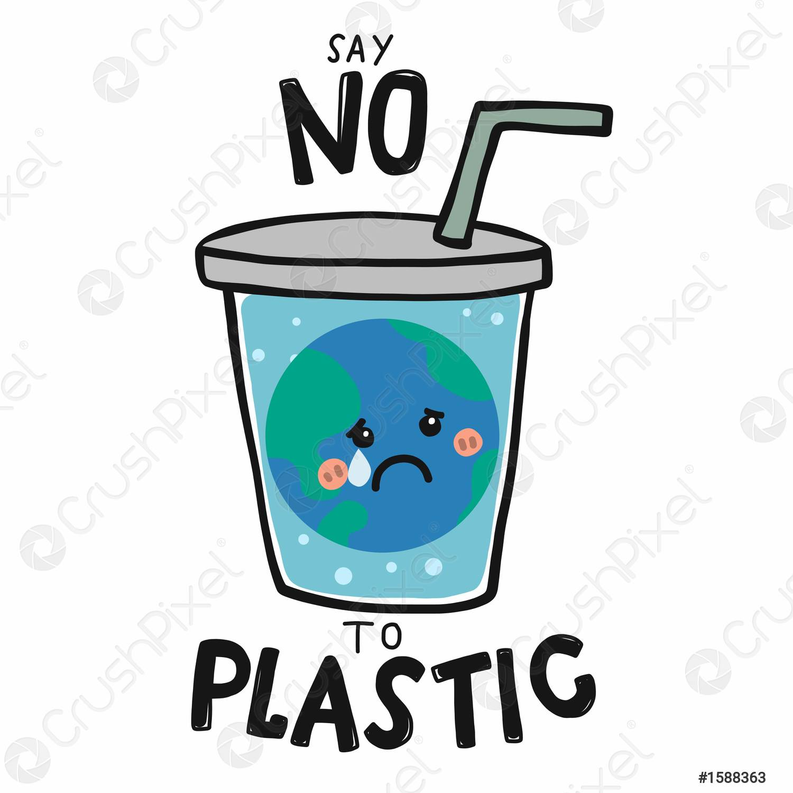
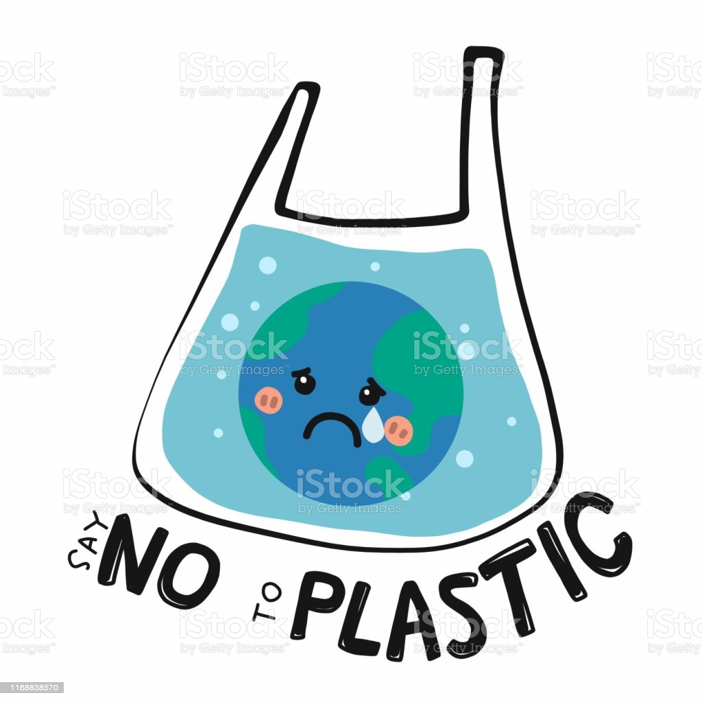
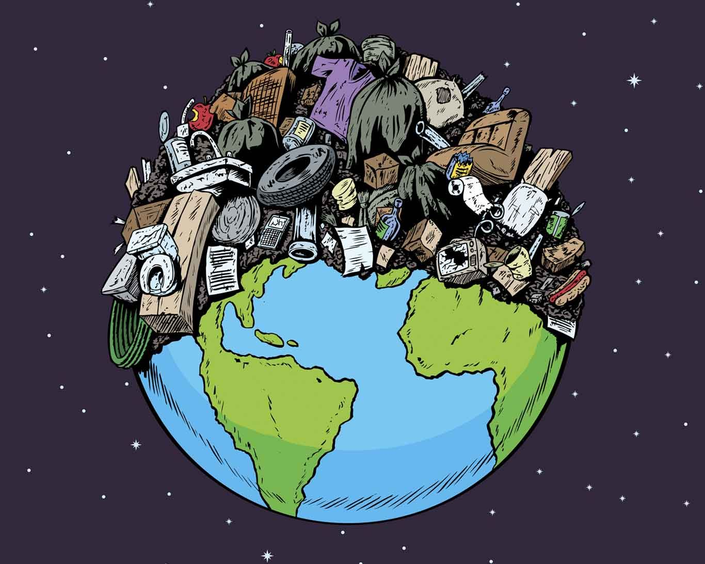
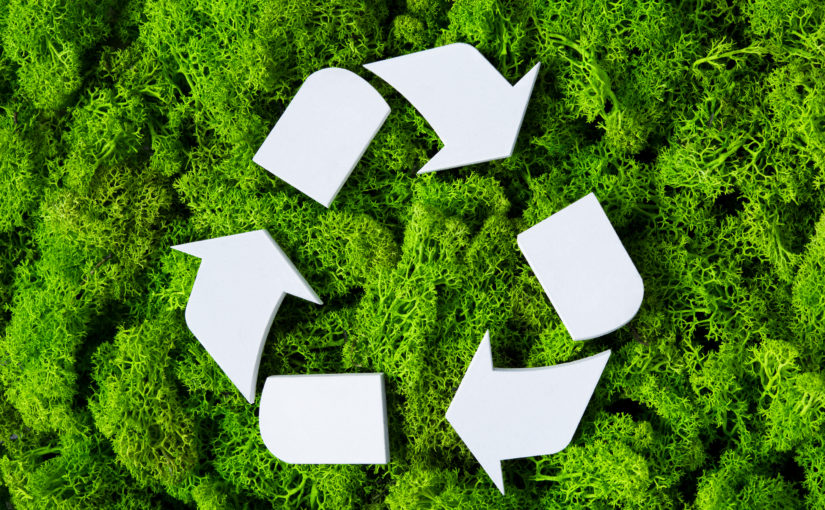
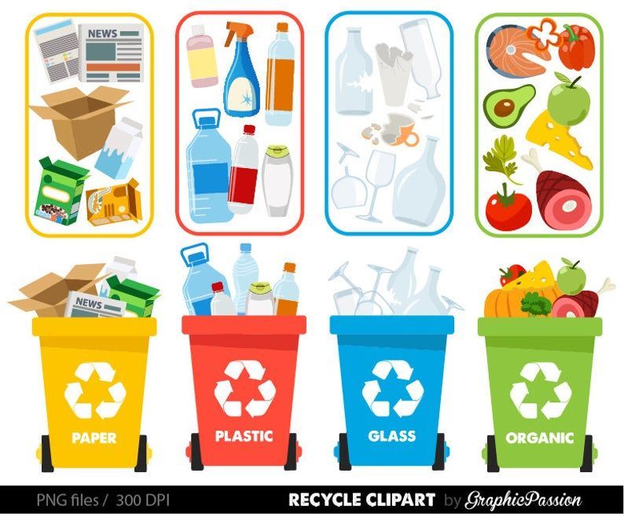
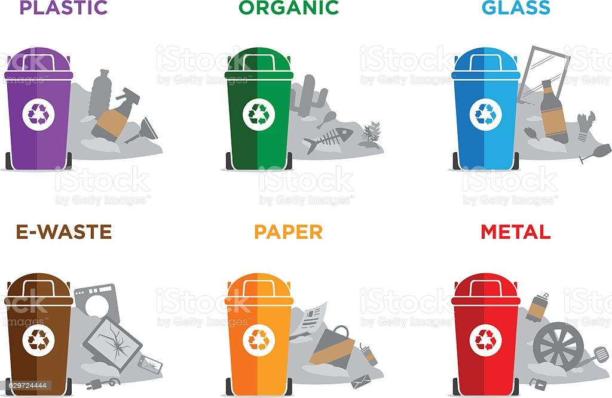
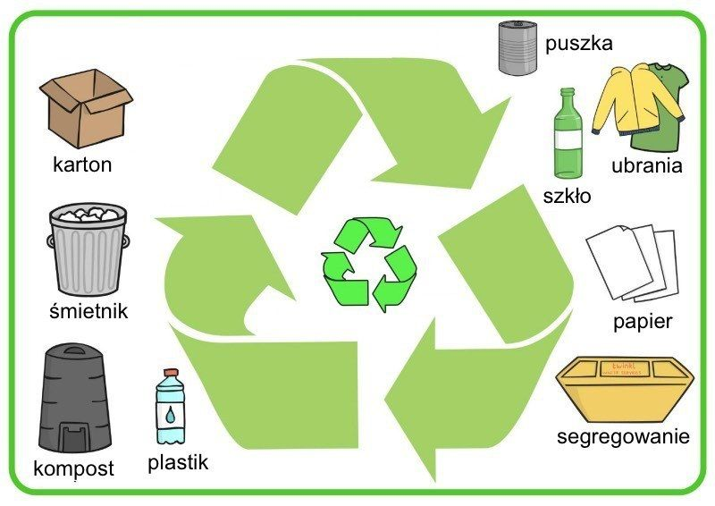
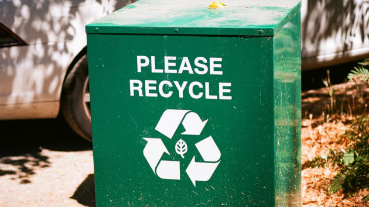
Zbieranie osobno papieru, szkła, tworzyw sztucznych wraz z metalem, a także oddzielanie odpadów biodegradowalnych pozwala uzyskać najbardziej pełnowartościowe surowce do ponownego przetworzenia. Przy segregacji bezwzględnie trzeba pamiętać o odpadach niebezpiecznych, do których zaliczają się zużyte baterie i akumulatory, przeterminowane lekarstwa, zużyte świetlówki, odpady po żrących chemikaliach (np. środkach ochrony roślin), a także zużyty sprzęt RTV i AGD (tzw. elektroodpady). Tych odpadów nie wolno wyrzucać do śmieci zmieszanych. Można je oddać w specjalnie wyznaczonych punktach w sklepach i aptekach, a także w punkcie selektywnej zbiórki odpadów komunalnych, czyli tzw. PSZOK-u (Punkt Selektywnego Zbierania Odpadów Komunalnych), zorganizowanym przez gminę. Godziny otwarcia PSZOK-u możesz sprawdzić m.in. na stronie internetowej swojej gminy. Obierki warzyw i owoców najlepiej przeznaczyć na kompost. Jeśli nie masz przydomowego kompostownika, wyrzuć je do pojemnika na odpady biodegradowalne (BIO). Co ważne, ani szkła, ani plastiku czy metalu nie trzeba myć przed wyrzuceniem do pojemnika na odpady segregowane. Wystarczy je opróżnić. Surowce zostaną umyte na późniejszym etapie recyklingu, sortujmy je więc i wyrzucajmy do odpowiednich pojemników.
Gdzie zatem wyrzucać śmieci? Według tych zasad odpady powinno się segregować następująco:
METALE I TWORZYWA SZTUCZNE
Butelki plastikowe ustawione w długim rzędzie
Należy wrzucać: Nie należy wrzucać:
odkręcone i zgniecione plastikowe butelki po napojach
nakrętki, o ile nie zbieramy ich osobno w ramach akcji dobroczynnych
plastikowe opakowania po produktach spożywczych
opakowania wielomateriałowe (np. kartony po mleku i sokach)
opakowania po środkach czystości (np. proszkach do prania), kosmetykach (np. szamponach, paście do zębów) itp.
plastikowe torby, worki, reklamówki, inne folie
aluminiowe puszki po napojach i sokach
puszki po konserwach
folię aluminiową
metale kolorowe
kapsle, zakrętki od słoików
butelek i pojemników z zawartością
plastikowych zabawek
opakowań po lekach i zużytych artykułów medycznych
opakowań po olejach silnikowych
części samochodowych
zużytych baterii i akumulatorów
puszek i pojemników po farbach i lakierach
zużytego sprzętu elektronicznego i AGD
Do pojemnika “Metale i tworzywa sztuczne“ trafiają:
aluminiowe wieczka;
butelki PET;
etykiety z folii termokurczliwej;
folia aluminiowa;
folia opakowaniowa;
foliowe saszetki po kosmetykach, sosach, jedzeniu;
garnki, blachy do pieczenia;
kapsułki po kawie;
kartony po napojach;
koperty z folią bąbelkową;
metalowe nakrętki od słoików, kapsle;
nakrętki od słoików;
opakowania po jogurcie;
plastikowe opakowania po kosmetykach i środkach czystości;
produkty z biodegradowalnego plastiku;
produkty z gumy i kauczuku;
puszki po napojach, konserwach;
styropian;
tubki po paście do zębów;
woreczki foliowe.
Tego nie wyrzucamy: akumulatory, baterie, płyty CD czy DVD, zużyty sprzęt elektroniczny i AGD, butle gazowe, amunicja, plastikowe pojemniki, w których przechowywano tłuste produkty, plastikowe zabawki, opakowania po farbach, lakierach i olejach, opakowania po aerozolach.
Wskazówki:
opakowania po żywności czy kosmetykach opróżniamy, ale nie musimy ich myć – o ile gmina wyraźnie tego nie zaleca;
jeśli opakowanie ma etykietę z folii termokurczliwej, o ile to możliwe, należy ją zdjąć;
z kopert z folią bąbelkową można – choć nie trzeba – odedrzeć papier i wyrzucić go do pojemnika na papier;
aluminiowe wieczka przed wyrzuceniem oddzielamy od pojemników;
butelki zgniatamy i odkręcamy z nich nakrętki.
PAPIER
Kartony owinięte sznurkiem, sucha makulatura gotowa do wywiezienia
Należy wrzucać: Nie należy wrzucać:
opakowania z papieru, karton, tekturę (także falistą)
katalogi, ulotki, prospekty
gazety i czasopisma
papier szkolny i biurowy, zadrukowane kartki
zeszyty i książki
papier pakowy
torby i worki papierowe
ręczników papierowych i zużytych chusteczek higienicznych
papieru lakierowanego i powleczonego folią
papieru zatłuszczonego lub mocno zabrudzonego
kartonów po mleku i napojach
papierowych worków po nawozach, cemencie i innych materiałach budowlanych
tapet
pieluch jednorazowych i innych materiałów higienicznych
zatłuszczonych jednorazowych opakowań z papieru i naczyń jednorazowych
ubrań
Do pojemnika “Papier” trafiają:
czasopisma, ulotki;
kartonowe pudła i opakowania;
kartony po jajkach;
papier, karton, tektura;
pudełka po pizzy (niezatłuszczone);
rurki po papierze toaletowym i ręcznikach;
torby papierowe (o ile nie są np. zatłuszczone i wykonane z tzw. papieru kredowego);
zeszyty.
Tego tu nie wyrzucamy: okładki książek, papier pokryty tworzywem sztucznym, papier lakierowany lub zabrudzony, tłusty, zużyte ręczniki papierowe i chusteczki higieniczne, papierowe worki po nawozach i materiałach budowlanych, paragony ze sklepu.
Wskazówki:
jeśli to możliwe, z kartonowych paczek usuwamy taśmę klejącą i wyrzucamy ją do odpadów zmieszanych;
zabrudzone/zatłuszczone części papieru – np. pudełek po pizzy – odrywamy i wyrzucamy do pojemnika na odpady zmieszane;
z zeszytów czy gazet nie trzeba wyrywać zszywek;
z książek czy kalendarzy oddzielamy duże elementy – np. okładki czy ramki.
SZKŁO
Zużyte butelki szklane z zielonego i białego szkła w dużej ilości w zakładzie recyklingu
Należy wrzucać: Nie należy wrzucać:
Butelki i słoiki po napojach i żywności (w tym butelki po napojach alkoholowych i olejach roślinnych)
Szklane opakowania po kosmetykach (jeżeli nie są wykonane z trwale połączonych kilku surowców)
Ceramiki, doniczek, porcelany, fajansu, kryształów
Szkła okularowego
Szkła żaroodpornego
Zniczy z zawartością wosku
Żarówek i świetlówek
Reflektorów
Opakowań po lekach, rozpuszczalnikach, olejach silnikowych
Luster
Szyb okiennych i zbrojonych
Monitorów i lamp telewizyjnych
Termometrów i strzykawek
UWAGA!
Niektóre gminy zapewniają osobne pojemniki na szkło białe i kolorowe.
Do pojemnika “Szkło” trafiają:
butelki po napojach i żywności;
opróżnione słoiki bez nakrętek;
szklane opakowania po kosmetykach.
Tego tu nie wyrzucamy: ceramika, doniczki, porcelana, szkło okularowe i żaroodporne, znicze z zawartością wosku, żarówki, świetlówki i reflektory, opakowania po lekach, rozpuszczalnikach i olejach silnikowych, lustra i szyby.
Wskazówki:
Opróżnione słoiki wyrzucamy do pojemnika na odpady szklane, natomiast nakrętkę do właściwego ze względu na tworzywo pojemnika;
słoików nie trzeba ich myć, o ile gmina wyraźnie tego nie zaleca.
ODPADY BIODEGRADOWALNE
Osoba wyrzucająca odpady kuchenne do pojemnika na bioodpady
Należy wrzucać Nie należy wrzucać
odpadki warzywne i owocowe (w tym obierki itp.)
gałęzie drzew i krzewów
skoszoną trawę, liście, kwiaty
trociny i korę drzew
niezaimpregnowane drewno
resztki jedzenia
kości zwierząt
oleju jadalnego
odchodów zwierząt
popiołu z węgla kamiennego
leków
drewna impregnowanego
płyt wiórowych i pilśniowych MDF
ziemi i kamieni
innych odpadów komunalnych (w tym niebezpiecznych)
Do pojemnika “BIO“ trafiają:
części roślin;
fusy z kawy i herbaty;
owoce;
skorupki jajek;
słoma, siano i trociny;
warzywa;
zepsute przetwory owocowe/warzywne (w tym np. zepsuta zupa).
Do pojemnika BIO nie wyrzucamy: ziemi i kamieni, popiołu z węgla kamiennego, drewna impregnowanego, kości, mięsa i odchodów zwierząt, oleju jadalnego, płyt wiórowych i pilśniowych, kurzu z odkurzacza.
Wskazówki: odpady biodegradowalne można wrzucać do pojemnika BIO tylko w opakowaniach biodegradowalnych np. z papieru, ale niezadrukowanych.
ODPADY ZMIESZANE
Brudne odpady zmieszane - torby foliowe, butelki, puszki
Do pojemnika z odpadami zmieszanymi należy wrzucać wszystko to, czego nie można odzyskać w procesie recyklingu, z wyłączeniem odpadów niebezpiecznych.
Do pojemnika “odpady zmieszane” trafiają:
gąbki, szmatki;
kurz z odkurzacza;
maszynki do golenia;
mięso, ryby, resztki zwierzęce;
nabiał, ser, jaja;
niedopałki papierosów;
odchody zwierząt;
olej do smażenia;
paragony ze sklepu/bankomatu;
pergamin;
piasek;
plastikowe opakowania po tłuszczu;
porcelana, fajans;
produkty higieniczne (pieluchy, pałeczki higieniczne, bandaże, podpaski, tampony, wata);
produkty skórzane, futrzane;
torebki po herbacie;
włosy, sierść, pióra;
zatłuszczony papier;
zapalniczka (pusta);
zbite naczynia, szklanki, kieliszki;
zużyte ręczniki papierowe, chusteczki higieniczne;
zużyte ubrania, tekstylia, obuwie;
żwirek czy trociny z kuwet dla zwierząt.
Tego tu nie wyrzucamy: odpady wielkogabarytowe, odpady budowlane i rozbiórkowe, zużyte opony, baterie, akumulatory, lekarstwa, odpady medyczne, świetlówki, opakowania po środkach ochrony roślin, zużyty sprzęt elektryczny i elektroniczny
Wskazówki:
zużytą torebkę z herbatą wyrzucamy do pojemnika na odpady zmieszane. Można też jednak z torebki oddzielić herbatę i wrzucić ją do pojemnika na odpady biodegradowalne, a papierową torebkę do pojemnika na odpady zmieszane. Rozwiązanie zależy od gminy;
w niektórych gminach jest możliwe – choć niewskazane – wyrzucanie nabiału, sera, jaj do pojemnika na odpady BIO,
Do kanalizacji trafiają:
woda z prysznica, zlewów, toalety (w tym papier toaletowy);
odchody (również zwierząt);
woda z rynien;
woda z prania.
Tego tu nie wyrzucamy: środki chemiczne, leki (!), artykuły sanitarne: bandaże, pieluchy lub tampony, fusy od kawy, olej, piasek, resztki jedzenia, niedopałki papierosów, ręczniki papierowe.